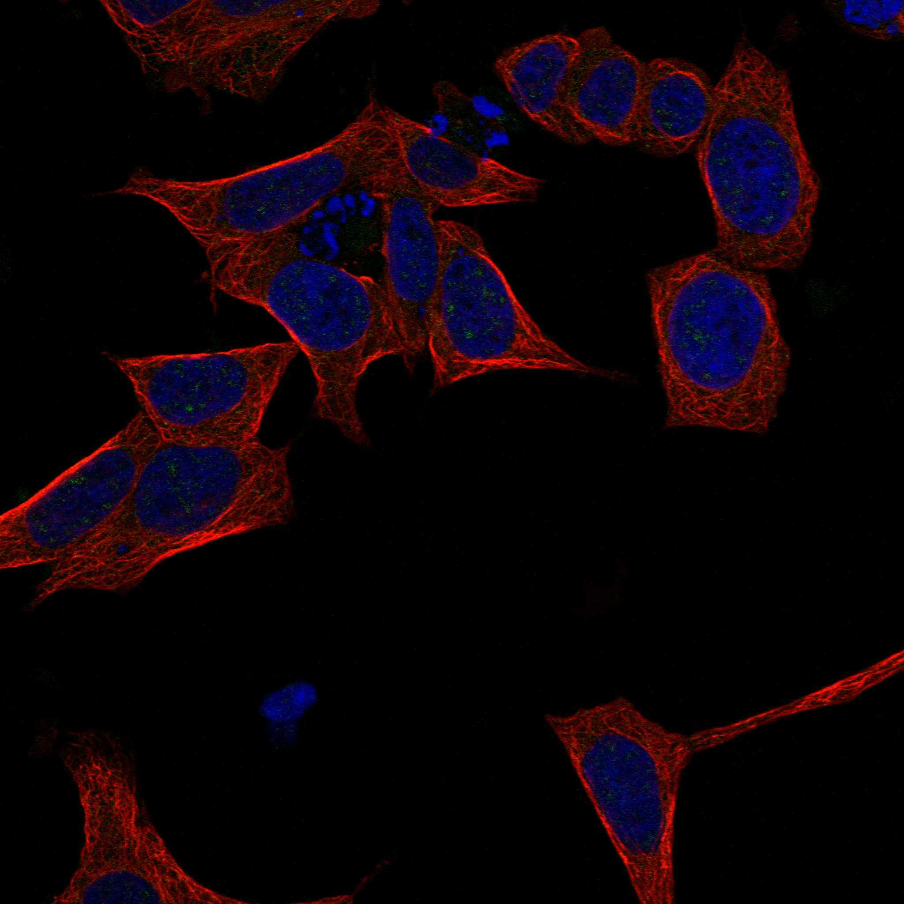
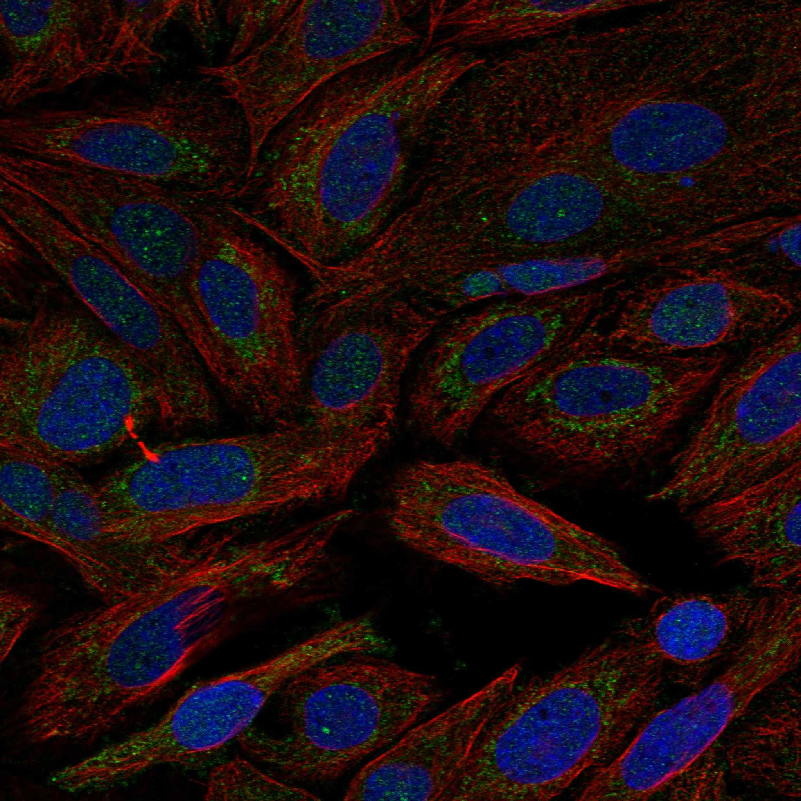

type: protein-evaluation gene: "DNAJC11" date: 2026-06-03 tags: [protein-scout, nuclear-protein, evaluation] status: scored ---
DNAJC11 核蛋白评估报告 (Full Re-evaluation)
1. 基本信息
| 项目 | 内容 |
|---|---|
| 基因名 / 别名 | DNAJC11 |
| 蛋白名称 | DnaJ homolog subfamily C member 11 |
| 蛋白大小 | 559 aa / 63.3 kDa |
| UniProt ID | Q9NVH1 |
| 评估日期 | 2026-06-03 |
IF 图像:  
2. 评分总览
| 维度 | 得分 | 满分 | 加权后 | 关键证据摘要 |
|---|---|---|---|---|
| 🔴 核定位特异性 | 4/10 | ×4 | 16 | HPA: Mitochondria; UniProt: Mitochondrion; Mitochondrion outer membrane |
| 📏 蛋白大小 | 10/10 | ×1 | 10 | 559 aa / 63.3 kDa |
| 🆕 研究新颖性 | 10/10 | ×5 | 50 | PubMed strict=10 篇 (≤20→10) |
| 🏗️ 三维结构 | 7/10 | ×3 | 21 | AlphaFold v6 pLDDT=84.8; PDB: 无 |
| 🧬 调控结构域 | 8/10 | ×2 | 16 | InterPro: IPR024586, IPR001623, IPR018253, IPR055225, IPR036 |
| 🔗 PPI 网络 | 3/10 | ×3 | 9 | STRING 15 partners; IntAct 0 interactions |
| ➕ 互证加分 | — | max +3 | 1.0 | PDB+AF+STRING+IntAct cross-validation |
| 原始总分 | 123.0/180 | |||
| 归一化总分 | 68.3/100 |
3. 详细分析
3.1 核定位证据
| 来源 | 定位 | 可信度 |
|---|---|---|
| Protein Atlas (IF) | Mitochondria | Supported |
| UniProt | Mitochondrion; Mitochondrion outer membrane | Swiss-Prot/TrEMBL |
IF 图像获取: IF图像已下载并嵌入 (2张)
GO Cellular Component:
- MIB complex (GO:0140275)
- mitochondrial outer membrane (GO:0005741)
- mitochondrion (GO:0005739)
- nuclear speck (GO:0016607)
- nucleoplasm (GO:0005654)
- SAM complex (GO:0001401)
结论: 核定位信号较弱，多个数据源显示混合定位或非核偏好。
3.2 蛋白大小评估
评价: 大小适中（200-800 aa），适合常规生化实验和结构解析。
3.3 研究现状
| 指标 | 数值 |
|---|---|
| PubMed strict count | 10 |
| PubMed broad count | 14 |
| 别名(未计入scoring) |
关键文献: 1. ARMC1 partitions between distinct complexes and assembles MIRO with MTFR to control mitochondrial distribution.. *Science advances*. PMID: 40203102 2. DNAJ Homolog Subfamily C Member 11 Stabilizes SARS-CoV-2 NSP3 to Promote Double-Membrane Vesicle Formation.. *Viruses*. PMID: 40872740 3. Mapping Interactome Networks of DNAJC11, a Novel Mitochondrial Protein Causing Neuromuscular Pathology in Mice.. *Journal of proteome research*. PMID: 31550165 4. A splicing mutation in the novel mitochondrial protein DNAJC11 causes motor neuron pathology associated with cristae disorganization, and lymphoid abnormalities in mice.. *PloS one*. PMID: 25111180 5. The mitochondrial inner membrane protein mitofilin exists as a complex with SAM50, metaxins 1 and 2, coiled-coil-helix coiled-coil-helix domain-containing protein 3 and 6 and DnaJC11.. *FEBS letters*. PMID: 17624330
评价: 极度新颖，几乎未被系统研究（PubMed ≤20篇）。
3.4 三维结构分析
| 指标 | 数值 |
|---|---|
| AlphaFold 版本 | v6 |
| AlphaFold 平均 pLDDT | 84.8 |
| 高置信度残基 (pLDDT>90) 占比 | 40.4% |
| 置信残基 (pLDDT 70-90) 占比 | 49.4% |
| 中等置信 (pLDDT 50-70) 占比 | 6.8% |
| 低置信 (pLDDT<50) 占比 | 3.4% |
| 有序区域 (pLDDT>70) 占比 | 89.8% |
| 可用 PDB 条目 | 无 |
PAE 图像说明: AlphaFold PAE 图像已重新获取并嵌入（见下方 PAE 图像修正块）；结构判断仍结合 pLDDT 与 PAE 综合判断。
评价: AlphaFold 中等质量（pLDDT=84.8，有序区 89.8%），结构基本可用。
3.5 结构域分析
| 来源 | 结构域 |
|---|---|
| InterPro/Pfam | InterPro: IPR024586, IPR001623, IPR018253, IPR055225, IPR036869; Pfam: PF00226, PF11875, PF22774 |
染色质调控潜力分析: 多个已知结构域注释，AlphaFold预测质量高，结构域折叠可信。
3.6 PPI 网络
STRING 预测互作 (combined score >0.4):
| Partner | Combined Score | Experimental | 功能类别 |
|---|---|---|---|
| IMMT | 0.984 | 0.622 | — |
| SAMM50 | 0.975 | 0.349 | — |
| CHCHD3 | 0.958 | 0.368 | — |
| APOOL | 0.958 | 0.321 | — |
| APOO | 0.955 | 0.329 | — |
| HSPA9 | 0.950 | 0.142 | — |
| MTX1 | 0.949 | 0.302 | — |
| MICOS10 | 0.938 | 0.416 | — |
| MTX2 | 0.936 | 0.236 | — |
| MICOS13 | 0.926 | 0.342 | — |
实验验证互作 (IntAct):
| Partner | 方法 | PMID |
|---|---|---|
| — | — | — |
PPI 互证分析:
- 仅STRING预测
- STRING partners: 15，IntAct interactions: 0
- 调控相关比例: 0 / 15 = 0%
评价: STRING 15 个预测互作，IntAct 0 个实验互作。调控相关配体占比 0%。
3.7 多库互证
| 维度 | 来源 | 结果 | 是否一致 |
|---|---|---|---|
| 三维结构 | AlphaFold pLDDT=84.8 + PDB: 无 | pLDDT=84.8, v6 | 仅预测 |
| 定位 | UniProt + HPA | Mitochondrion; Mitochondrion outer membrane / Mitochondria | 一致 |
| PPI | STRING + IntAct | 15 + 0 interactions | 数据有限 |
互证加分明细:
- 多库定位一致 (3源): +0.5
- STRING + IntAct 双源验证: +0
- 结构域 + AlphaFold 质量: +0.5
- PDB 多条目覆盖: +0
总分: +1.0 / max +3
4. 总体评价
推荐等级: ⭐⭐⭐
核心优势: 1. DNAJC11 — DnaJ homolog subfamily C member 11，极度新颖，几乎未被系统研究（PubMed ≤20篇）。 2. 蛋白大小559 aa，大小适中（200-800 aa），适合常规生化实验和结构解析。
风险/不确定性: 1. PubMed 10 篇，研究基础极有限，功能注释不完整 2. 结构数据质量可接受
下一步建议:
- [ ] 查阅最新关键文献补充研究背景
- [ ] 获取 Protein Atlas IF 图像确认亚细胞定位
- [ ] 设计体外实验验证核定位及潜在调控功能
5. 数据来源
- UniProt: https://www.uniprot.org/uniprotkb/Q9NVH1
- Protein Atlas: https://www.proteinatlas.org/ENSG00000007923-DNAJC11/subcellular
- PubMed: https://pubmed.ncbi.nlm.nih.gov/?term=DNAJC11
- AlphaFold: https://alphafold.ebi.ac.uk/entry/Q9NVH1
- STRING: https://string-db.org/network/9606.ENSP00000
- Packet data timestamp: 2026-06-03 12:16:57
<!-- AF_PAE_REPAIR_START --> PAE 图像修正（2026-06-05）: AlphaFold 提供 predicted aligned error 图像；此前“PAE 图像暂无数据”的表述为未获取/未嵌入导致。